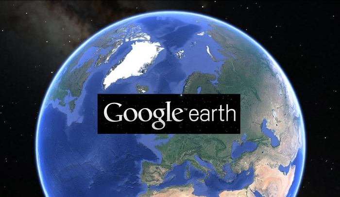

Google Earth
Google Earth je program i alat u kom možete da okrećete globus ili da unesete adresu (naziv, koordinate) i tako da posetite gotovo bilo koju lokaciju.
U njemu se nalaze praktično svi alati za mape koje Google nudi. Prikazani su nazivi lokacija, oznake na putevima, podaci o vremenskim uslovima...
Sve je na jednom mestu.

Google čini svoje proizvode sa mapama značajno korisnijim i informativnijim uz pomoć slika, a sada je tehnološki gigant omogućio dublji uvid u svoj proces kreiranja mapa.
Kompanija ističe da je kreirala preko 10 miliona milja (oko 16 miliona kilometara) fotografija za Street View do sada. Takođe, istaknuto je da Google Earth ima 36 miliona kvadratnih milja HD satelitskih fotografija koje se mogu pretraživati, a ove fotografije pokrivaju 98 procenata kompletne svetske populacije.
Google Earth možete preuzeti: OVDE